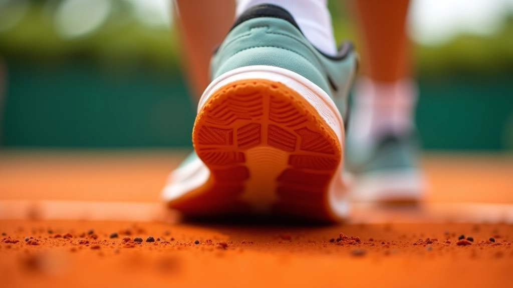
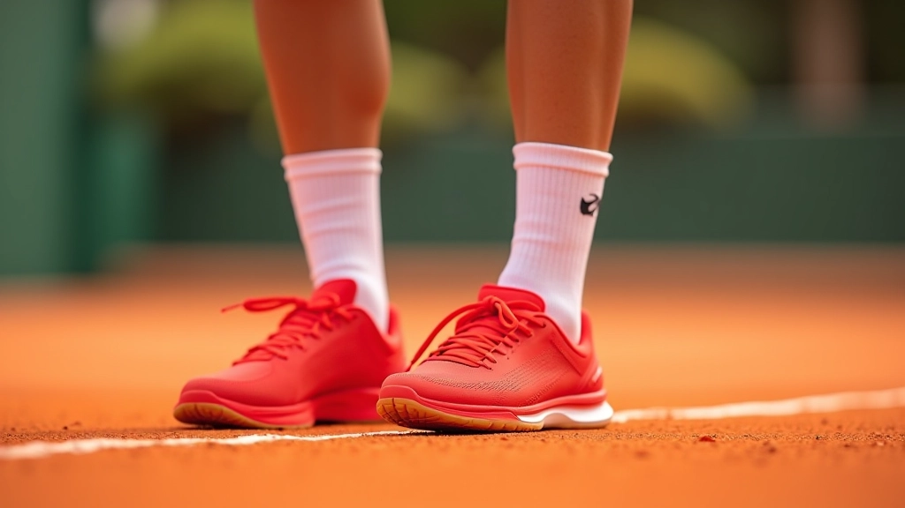
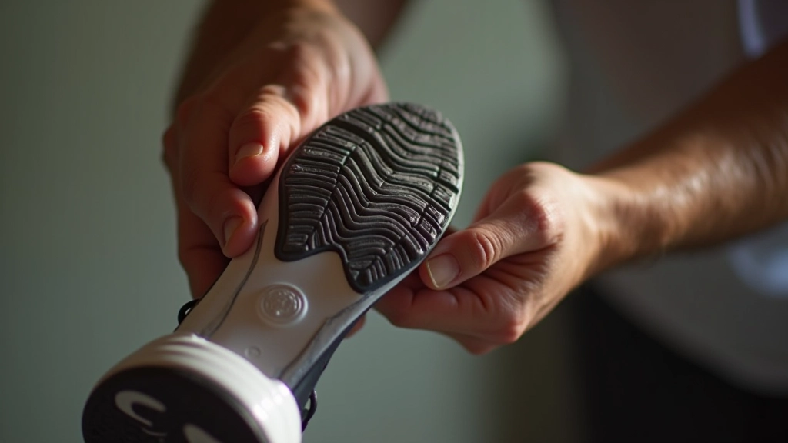

خطوات الانزلاق الصحيحة: من البداية للاحتراف
شرح مفصل لكيفية تنفيذ الانزلاق بشكل آمن وفعال. تعلم الخطوات الأساسية والأخطاء الشائعة.
الحذاء المناسب هو أساس الانزلاق الآمن. نتعرف على المواصفات التي تبحث عنها والفرق بين أحذية الطين والأسفلت.

الحذاء ليس مجرد قطعة ملابس. إنه واجهة التفاعل بينك وبين الملعب. عندما تنزلق على الطين، تحتاج إلى حذاء يوفر التوازن المناسب بين الاحتكاك والانزلاق. حذاء سيء يعني انزلاق غير منضبط أو عدم استقرار في اللحظات الحرجة.
لاعبو التنس المحترفون يعرفون هذا جيداً. هم لا يستخدمون أحذية الشارع أو أحذية الركض العادية. يختارون تجهيزات مصممة خصيصاً للطين — مع نعل مسطح، درجة احتكاك معينة، وتصميم يدعم الحركات الجانبية السريعة.
أي حذاء طين جيد يجب أن يحقق معايير معينة. أولاً، النعل يجب أن يكون مسطحاً وليس منحنياً. الأحذية الرياضية العادية لها قوس عالي في المنتصف — هذا مشكلة لأنه يقلل من الاتصال مع الأرض.
ثانياً، احتكاك النعل. تحتاج إلى درجة احتكاك معتدلة. الكثير من الاحتكاك يعني أنك لن تنزلق (ضد الهدف)، والقليل جداً يعني فقدان السيطرة. حذاء الطين يجب أن يسمح لك بالانزلاق المنضبط — أن تتحكم بسرعتك ووجهتك.
ثالثاً، الثبات الجانبي. عندما تتحرك بسرعة جانباً، تحتاج إلى كعب قوي ودعم قوس. الكاحل يجب أن يشعر بالأمان — لا ارتجاج أو تمايل.


هذا الفرق حاسم. حذاء الأسفلت (الملاعب الصلبة) مصمم للاستقرار والراحة. له نعل سميك بدرجة احتكاك عالية لأن الأسفلت زلق أقل. عندما ترتدي حذاء أسفلت على طين، تواجه مشكلتين: أولاً، تنزلق أقل مما يجب، مما يجعل الحركات الجانبية صعبة. ثانياً، القوة الإضافية المطلوبة تجهد كاحلك وركبتك.
حذاء الطين، بالمقابل، له نعل أرق — حوالي ٥-٧ ملم بدلاً من ١٠-١٢ ملم. النعل الأرق يعني اتصالاً أفضل بالأرض ومرونة أكثر. الاحتكاك أقل لأن الطين يوفر مقاومة طبيعية. تصميم النعل عادة ما يكون بنمط نقاط أو خطوط متباعدة، وليس خطوط متقاربة مثل الأسفلت.
ارتد الحذاء وتحرك فيه. انزلق قليلاً إذا كان ممكناً. يجب أن تشعر بالراحة من اللحظة الأولى. لا تتوقع أن يصبح مريحاً بعد فترة — حذاء جيد يكون مريحاً فوراً.
ابحث عن نعل مسطح وليس منحنياً. مرّ أصابعك على النعل — يجب أن تشعر بنمط احتكاك واضح لكن ليس خشناً جداً. إذا بدا النعل ناعماً جداً، فهو قد لا يوفر احتكاكاً كافياً.
امشِ بسرعة جانباً وهو مرتدٍ. يجب أن تشعر بدعم قوي حول الكاحل. إذا شعرت بتمايل أو عدم استقرار، فهو ليس الحذاء المناسب.

امسح الطين من النعل فوراً. استخدم قطعة قماش جافة أو فرشاة ناعمة. الطين المتراكم يقلل من الاحتكاك ويؤثر على الأداء.
جفف الحذاء في الهواء الطلق بعيداً عن أشعة الشمس المباشرة. الحرارة الشديدة تضر بالمواد. لا تضعه في الفرن أو بجانب مصدر حرارة مباشر.
حذاء الطين الجيد يستمر حوالي ٦-٨ أسابيع من الاستخدام المنتظم. بعد ذلك، يبدأ النعل في الفقدان والاحتكاك في التناقص. استبدله قبل أن يصبح غير آمن.
الحذاء المناسب ليس رفاهية — إنه ضرورة. عندما تختار حذاء طين جيداً، أنت تختار الأمان والأداء والراحة. تحتاج إلى نعل مسطح، احتكاك معتدل، وثبات جانبي قوي. ولا تنسَ أن أحذية الطين والأسفلت مختلفة — استخدم الصنف الصحيح للسطح الصحيح.
استثمر في حذاء جيد. اختبره. اعتن به. ستلاحظ الفرق من اللحظة الأولى على الملعب.
هذا المقال يقدم معلومات تعليمية عن اختيار أحذية التنس للملاعب الترابية. الآراء والنصائح المقدمة هنا بناءً على ممارسات عامة في الرياضة. كل شخص له احتياجات مختلفة. إذا كان لديك أي آلام في القدم أو الكاحل أو مخاوف صحية، استشر متخصصاً طبياً قبل الاستمرار في التدريب.

فريق التحرير
كتبه فريق ملعب الانزلاق التحريري، متخصصون في توفير إرشادات عملية وموثوقة عن تقنيات الانزلاق في التنس.
شرح مفصل لكيفية تنفيذ الانزلاق بشكل آمن وفعال. تعلم الخطوات الأساسية والأخطاء الشائعة.

برنامج تدريبي يركز على تحسين التوازن والثبات. تمارين عملية يمكنك تطبيقها في كل جلسة.

كيفية الحفاظ على قوة الضربة والدقة عندما تكون في حالة انزلاق. نصائح من المحترفين.